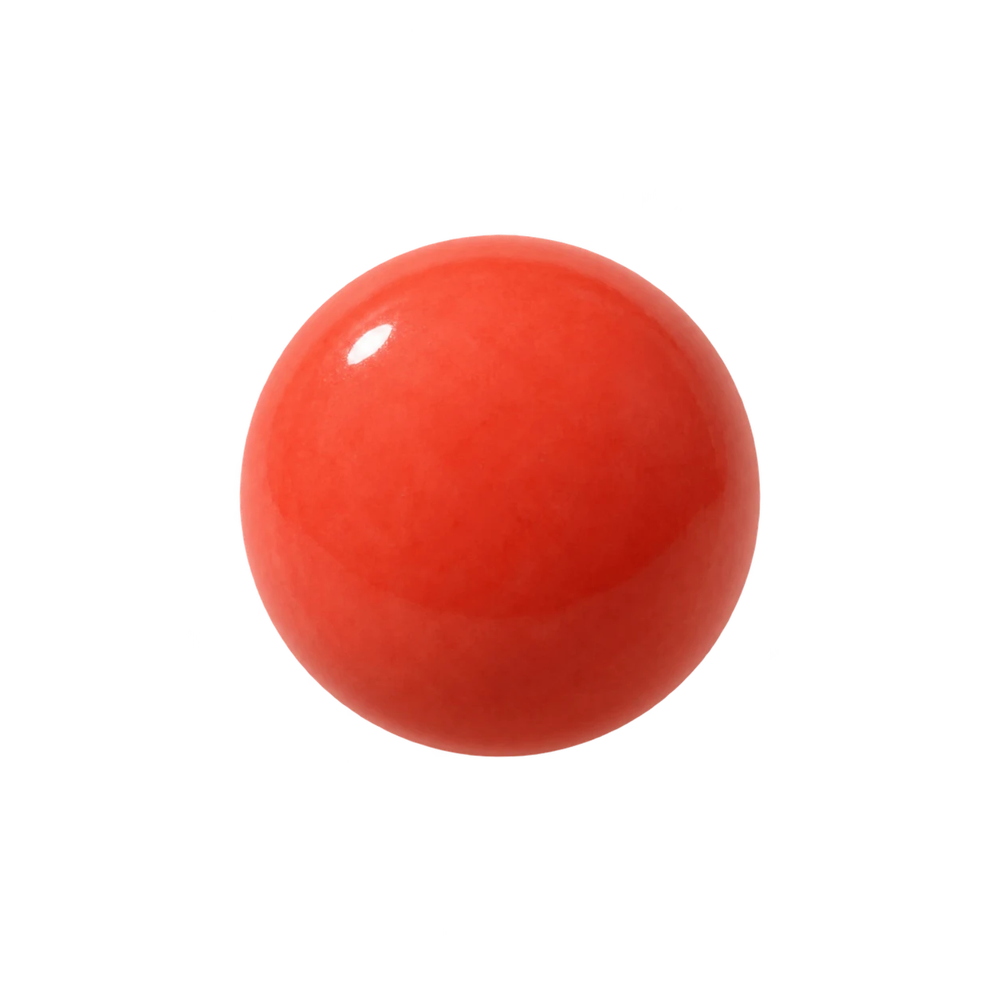

curvlet.
Small changes.
A different rhythm.
A different rhythm.
A feeling, in five points.
A NOTE TO CURVLET

5time samples
prepared.
prepared.
The curve, translated into progress.
Time moves left to right. Progress moves upward.
Release · sample 3